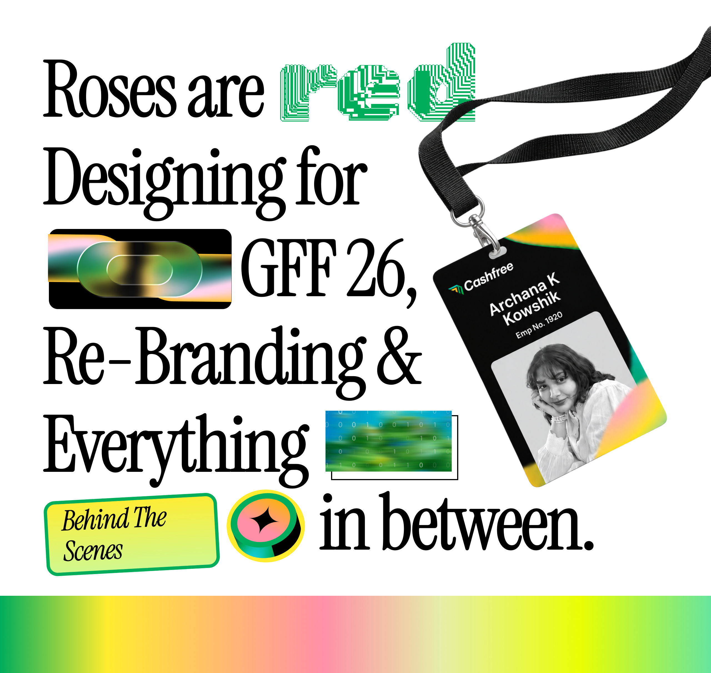
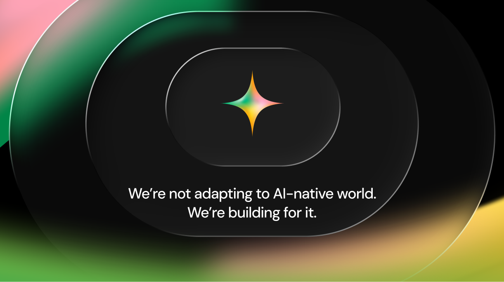
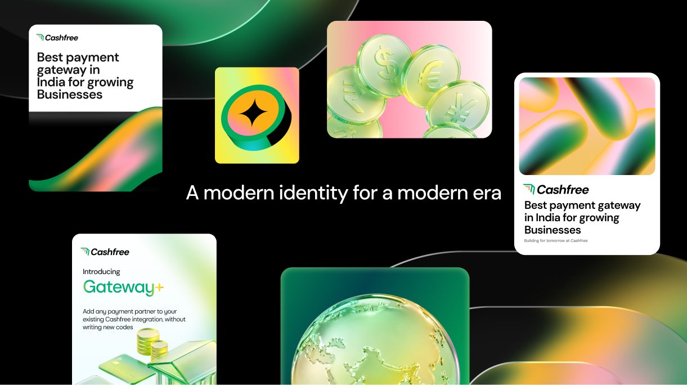
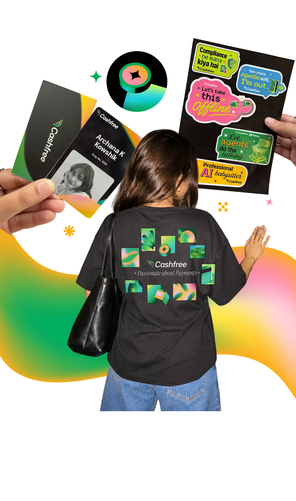
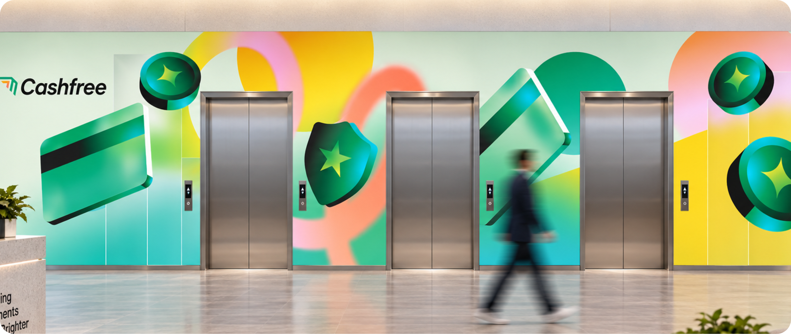
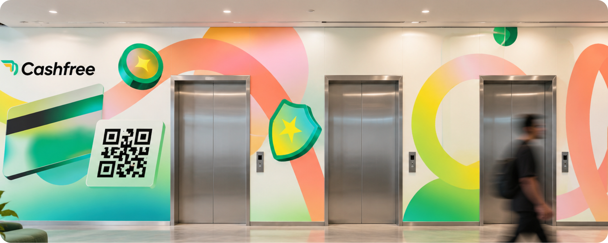
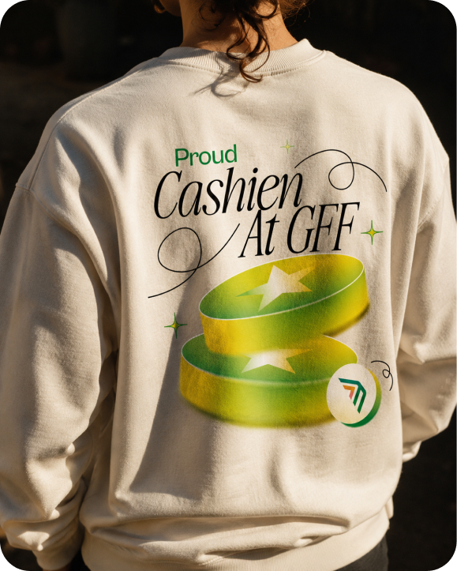
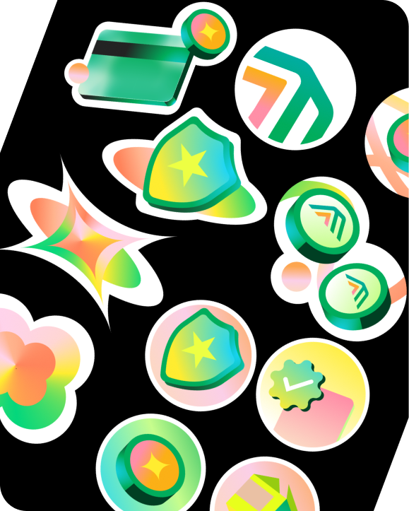
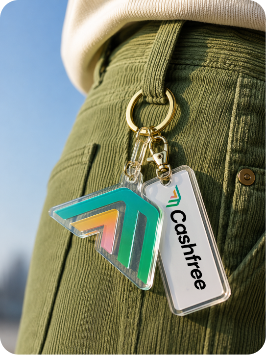
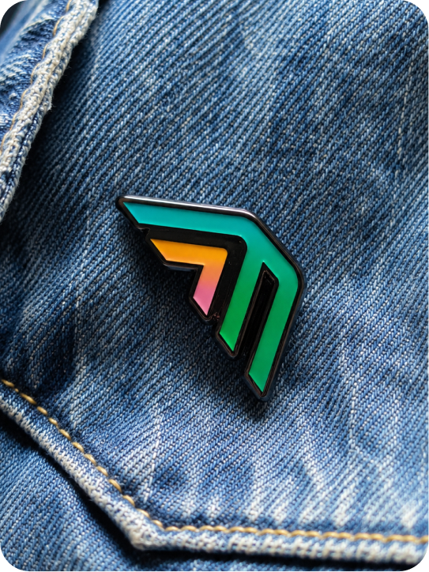

When Cashfree Payments stepped into the Global Fintech Fest 2026, we didn't just want to show up. We wanted to leave a mark. This project brought together a full rebrand expression across social media, brand collaterals, merch, and environmental design. Every touchpoint, from a LinkedIn post to an elevator wall wrap, carried the same energy: bold, modern, unmistakably Cashfree.
Static assets were only half the story. Using Jitter, I brought the new visual language into animation, giving the brand a kinetic dimension it had never had before. Brand elements don't just sit; they breathe, flow, and transition.
From the circular Cashfree banner to the product mockup grid, every collateral was built to flex. Dark backgrounds, the brand's signature green, and clean typography that works at any scale. We're not adapting to the AI-native world; we're building for it.


Rebrand energy doesn't stop at the screen. We took it into physical form: t-shirts, danglers, sticker sheets. Things you could wear, carry, and stick on everything. The GFF merch became conversation starters before anyone even reached the booth.

What does the brand look like at scale? We asked that question and ran with it: elevator wall wraps, building signage mockups, environmental design that proved the rebrand could live at any size. These explorations shaped how we thought about brand presence at GFF.





